|
|||||||||||||||||||||||||||
|
|||||||||||||||||||||||||||
|
岩木山 山スキー |
| 開 催 日 | ２００９年４月１８〜２０日 | |||
| リーダー | 田代正廣 | |||
| 報 告 者 | 高尾文雄 小松崎幸代子 徳永泰朗 | |||
| HP製作者 | 徳永泰朗 | |||
| 参加者数 | １９名 | |||
| 陸奥津軽にも春が訪れました。雪に閉ざされていた岩木スカイラインも４月１１日に開通しました。そこでこの岩木スカイラインを利用し、自動車の機動力を十二分に発揮して、名残惜しい残雪を滑りまくりました。 ３日間を通して無風の晴天が続き、都合５度も岩木山山頂直下の肩に立ちました。そしてその度に岩木山を知り尽くしている津軽の会員の先導で大斜面をほしいままに滑ったのです。 さらに３日目の午後には満開の弘前城の桜を愛でる付録まで付きました。 |
| 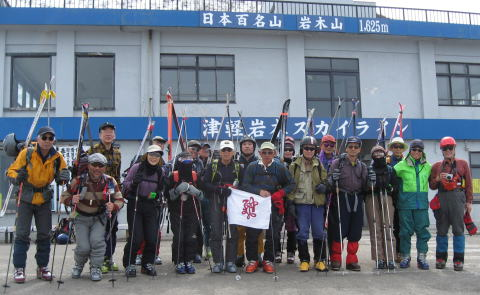 |
| １日目 ４月１８日（土） |
| 午前の部：弥生コース 嶽温泉「山楽」に８時過ぎ到着。息つく間もなく8：45マイクロバス乗車——８合目9：25——1560ｍ地点11：50——滑降——11：55滑降終了（380ｍ）——歩行——12：20バス乗車（275ｍ）——13：00山楽帰着 |
 |
A | 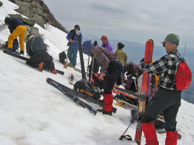 |
| 機動力に頼りっきりではなく 毎回担ぎ、歩きます |
テラスを回りこんだ緩斜面でシール装着 |
| 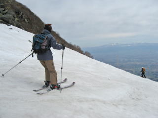 | A | 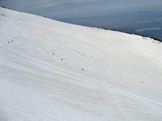 |
| 雪崩を警戒して３０〜４０m、間を空けてスタート | 弥生コース、大黒沢の斜面に 仲間の影が米粒のように広がります |
| 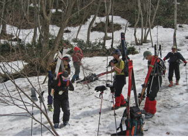 | A | 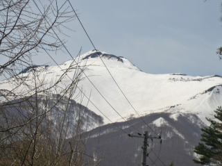 |
| 寡雪の今シーズンはコースの途中で 板を脱ぐことになりました |
振り返り仰ぐと、たった今滑り降りた大黒沢の 大斜面が春の光に光っていました |
| 午後の部：百沢コース 13：45山楽——八合目14：15——1508ｍ地点15：10——滑降——15：30滑降終了（700ｍ）——歩行——16：20バス乗車——16：35山楽帰着 そして夜は例によって宴がスタートします |
| 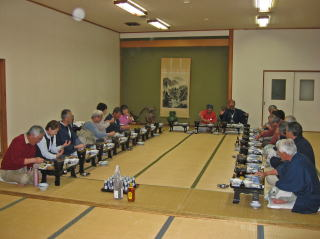 | A | 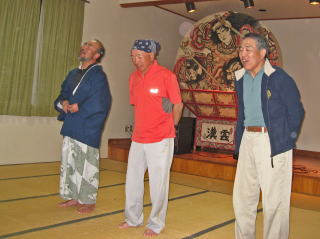 |
| 大広間で会席 誰が正面に座るかもめましたね | ねぶたを背にして津軽の男たちが 渋い歌を披露 |
 |
| 上の写真をダブルクリックすると、動画がスタートします。 戻るときは、ウインドウの右上隅の×をクリックして下さい。 |
| 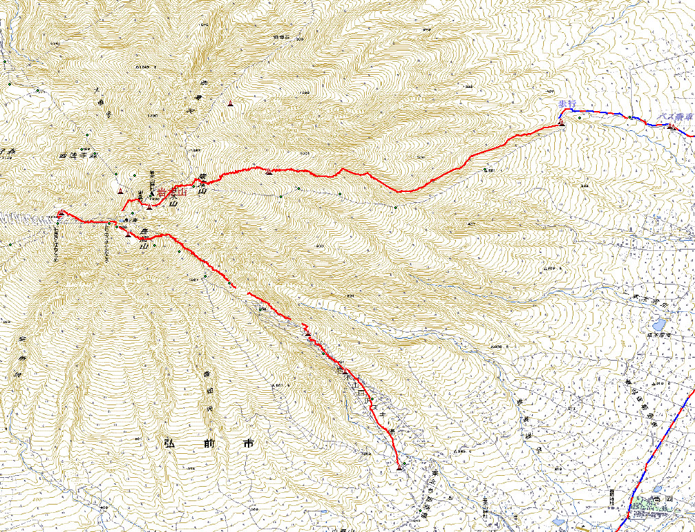 |
| 1日目の滑降軌跡 |
| ２日目 ４月１９日（日） |
| 午前の部：赤倉コース 山楽8：55——八合目9：25——1552ｍ地点10：32——滑降——11：53スキー終了地点（410ｍ）——12：00バス乗車——12：40山楽帰着 |
| 午後の部：長平コース 山楽13：30——八合目14：00——1439ｍ地点14：45——滑降——15：05西法寺森（1288ｍ）——15：43鰺ヶ沢スキー場山麓駅——16：40山楽帰着 |
| 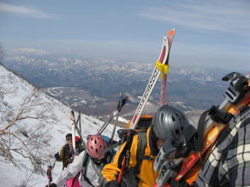 | A | 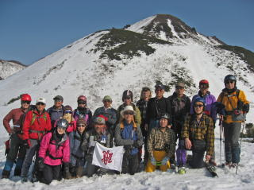 |
| 今日も担ぎ、登る その背には 白神山塊がおぼろに浮かびます |
長平ルートに滑り込む前に全員集合 |
| 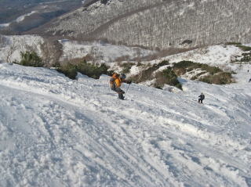 | A |  |
| 急斜面にも広大さにも飲まれず膝を入れて・・・・ | すでに今シーズンの営業を終了した 鰺ヶ沢スキー場の山頂駅に滑り込む |
| 夜はまた宴 |
 |
| ＡＳＣの宴はやっぱり膝を交えてがいいですね |
| 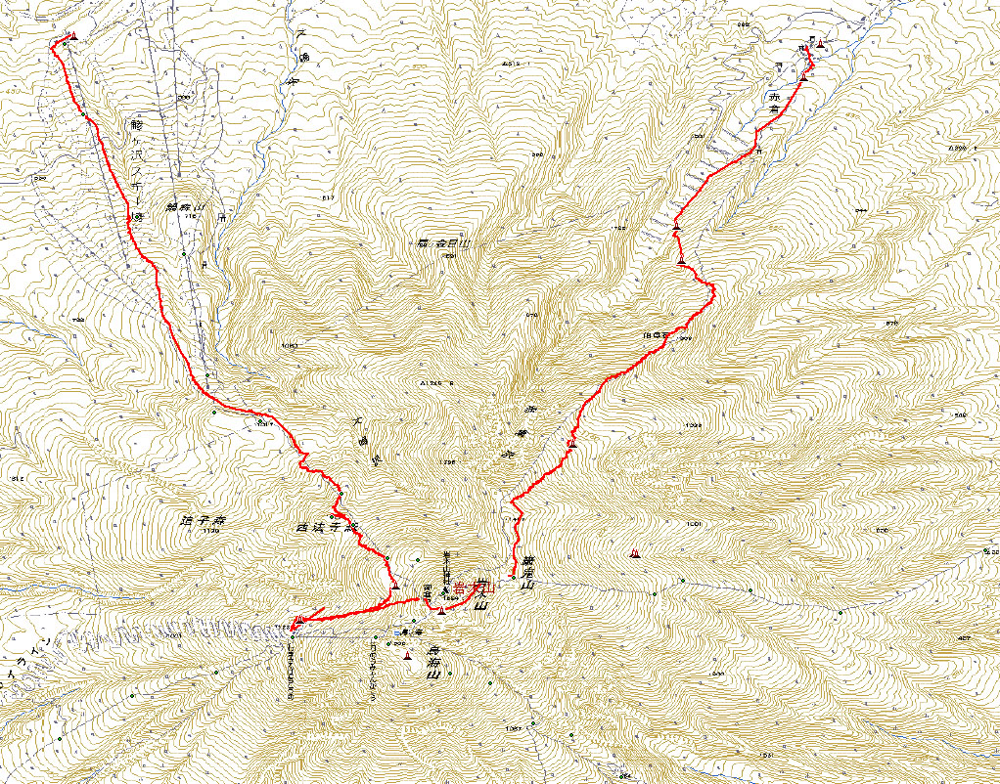 |
| 2日目の滑降軌跡 |
| ３日目 ４月２０日（月） |
| 午前の部：弥生コース 山楽8：45——八合目9：15——1560ｍ地点10：05——滑降——10：55スキー終了地点——11：20バス乗車——12：00山楽帰着 |
| 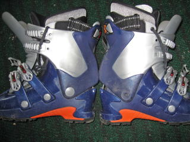 | A | 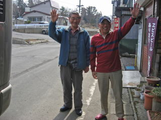 |
| 右側の靴のくるぶしの金具が外れ、岩木山以降も たっぷり計画のあったＭさんは困っていました 前には左側の靴の同じ金具が外れたそうです |
今日のスキーに参加しない方とはお別れです またどこかで御一緒するまで さようなら |
| 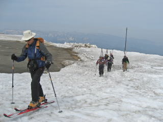 | A | 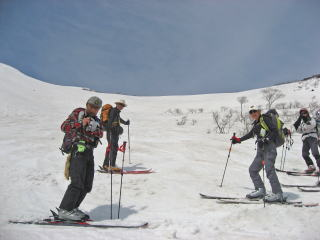 |
| ひとりシールの効きを試す人もいます | 大斜面一気滑降のあと、一休み |
| 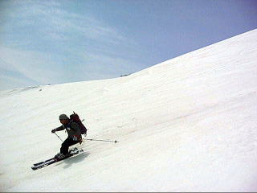 | |
|
| 午後の部：弘前城の観桜 参加者は19名中10名。他のメンバーたちは——鳥海、——白神、そして——東京とそれぞれの道に就きました。 |
 |
A |  |
 |
| 天守台からは岩木山が 春霞に浮かんでいました |